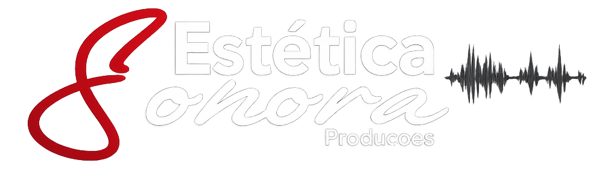

Produção Musical
Gravação, mixagem, masterização e direção artística.

Produtora Musical, Cultural e de Eventos
Ensino de música, gravação, mixagem e masterização, produção cultural e planejamento de carreira artística.
História
Iniciou a carreira musical em 2005, passando por bandas, festivais e produção cultural. Em 2017, após a graduação em Produção Fonográfica, consolidou a Estética Sonora Produções com foco em identidade artística, execução técnica e impacto cultural.
A atuação combina direção musical, produção executiva e planejamento de carreira, sempre conectada à cena local e aos grandes movimentos culturais do Rio de Janeiro.
Atuação
Gravação, mixagem, masterização e direção artística.
Eventos, festivais, estruturas e atrações musicais.
Estratégia, posicionamento e desenvolvimento profissional.
Formação artística com foco em presença e performance.
Linha do tempo
Portfólio
Direção de produção e curadoria artística.
Produção executiva e vocalista.
Produção musical e executiva em editais RJ.
Coordenação geral do Pavilhão Cultural.
Prova social
Momentos
Agendamento
Clique no botão do WhatsApp para iniciar seu atendimento. Em breve, este espaço poderá receber um formulário completo de briefing.
Falar no WhatsAppContato
Magé, Rio de Janeiro
Email: contato@esteticasonora.com.br
Instagram: @esteticasonora
Produção Musical
Produção Cultural
Planejamento de Carreira Artística